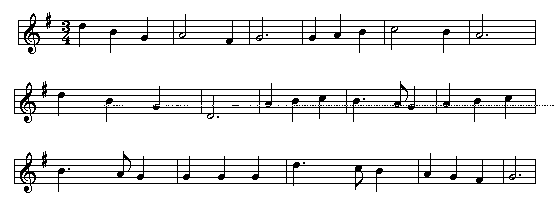

|
Directions: prepare for submission the following exercise. Using one of the electronic braille software packages, transcribe into braille the following sentences. Electronic braille generated using a six-key Perkins emulator is the preferred format.
For your submission, use the following format: braille your name, email, and institution in the top right-hand corner in the first space, with runovers in Cell Three. Begin brailling on Line Five.
Submit your braille either via email. Electronic braille (Mac/PCBrailler, Duxbury, Edgar, Megadots, Pokadotsm, EDIT-PC, etc.) should be sent via email to rbroadnax@shodor.org. You can also use the text box at the bottom of this page to submit your work. Simply cut and paste the braille into the box, then click on the "Submit braille" button.
HARD COPY BRAILLE IS DISCOURAGED! We strongly recommend that you use one of many computer-based electronic brailling software packages. All hard copy braille should be sent to:
Mr. Robert Gotwals
The Shodor Education Foundation, Inc.
923 Broad Street Suite 100
Durham, NC 27705
(Note to musicians: you will notice some inaccuracies in the score below, purely for educational purposes!)
Produce the following score in braille music. Do not forget the key and time signatures (positioned appropriately!)

|
 Tჸe $_hodor bARionlegitim@.
Tჸe $_hodor bARionlegitim@.